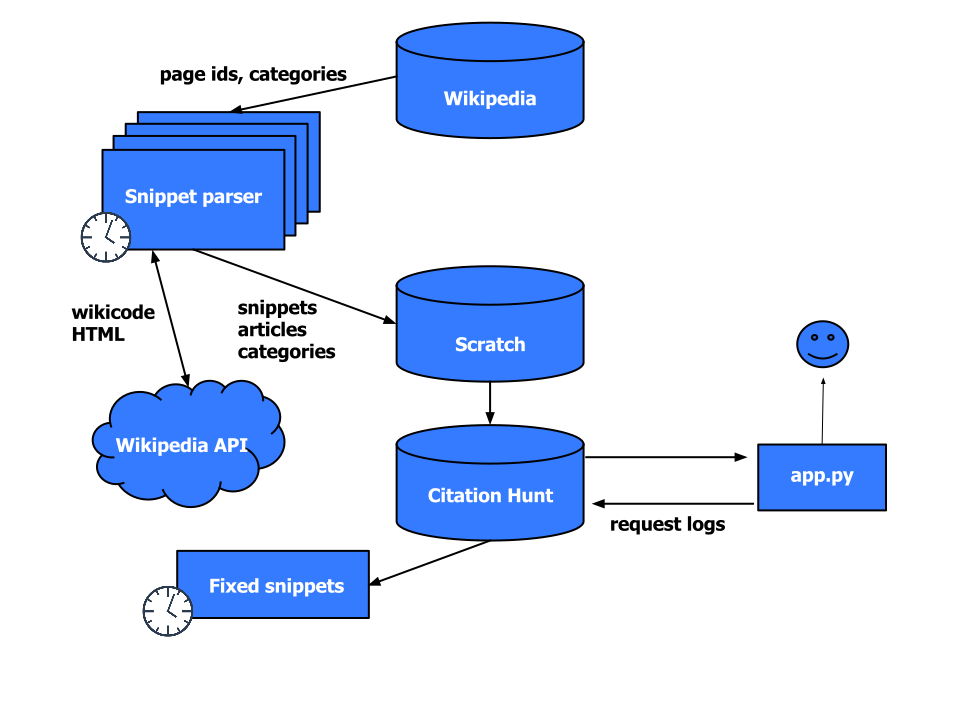

How can I begin to edit Wikipedia?
Easy, uncontroversial, but still interesting
Citations![citation needed]
#1lib1ref
“As part of the Wikipedia 15 birthday celebration (#Wikipedia15) in January 2016, the Wikipedia Library team (@WikiLibrary) ran a social media campaign asking librarians all over the world to Imagine a World where Every Librarian Added One More Reference to Wikipedia. We called it #1lib1ref.”
https://blog.wikimedia.org/2016/04/25/engaging-librarians-1lib1ref/
“The combination of [Citation Needed] templates and the Citation Hunt tool created a really low participation threshold. (...) Moreover, these tools facilitate a behaviour common amongst librarians: chasing information in reference materials (this is a core part of reference librarian training).”
https://meta.wikimedia.org/wiki/The_Wikipedia_Library/1Lib1Ref/Lessons
“We need more simple, gamified but substantive models for contributing to Wikipedia. Citation Hunt was an excellent tool for engaging librarians, and we have received feedback from librarians that the small action made the biggest difference for their participation.”
https://meta.wikimedia.org/wiki/The_Wikipedia_Library/1Lib1Ref/Lessons
Other users:
Various editathons
Wikipedia links (e.g., WP:Citation_needed)
Some English numbers:
Technical review

The snippet parser
Extract snippets or full sections
HTML (Wikipedia API) output, annotated with custom CSS classes
Powered by mwparserfromhell and a lot of hackery
Future direction
The immediate stuff:
Longer term:
Prevent citogenesis? Bad sources?
Campaigns on special dates throughout the year?
Generalize to other kinds of templates and backlog
https://tools.wmflabs.org/citationhunt